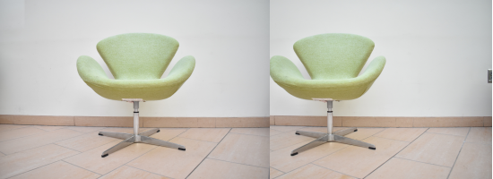

9.35 Illusion Laboratory
Spring 2023 Vision Lab

Does contrast or the amount of disparity between eyes affect our ability to fuse and perceive 3D images?
In order to answer our scientific question, we split up the illusions into two categories: changing disparity and changing contrast. For changing disparity, we present nine different images of two chairs. The difference between the images is that the disparity between the view for the two chairs increases by one inch each time, from a one inch disparity to nine inch disparity. In this way, we can test how salient subjects find the 3D fusion of the two images to determine where the illusion is strongest and where (if anywhere) the images no longer fuse.
For changing contrast, we present three levels of contrast (low, normal, and high) with the 4-inch disparity image since it is in the middle of our measured disparities and we found it to create a salient 3D image. Using these images of different contrasts, we can see whether subjects perceive any of the contrasts as being easier or more difficult to create a 3D fused image with, therefore answering our scientific question.
Instructions
To fuse the two images to try and elicit a perception of a 3D image, get as close of a viewing as possible of the stimulus (i.e. putting your face near the screen, or possibly viewing on your phone and holding your phone up to your face) such that the two chairs overlap each other completely. You may need to cross your eyes or make the image smaller (by zooming out or viewing on your phone) to ensure the two images overlap and fuse.
Disparity
1"
2"
3"
4"
5"
6"

7"
8"
9"
Contrast
Low
Original
High
Citations
Yellott, J.I., JR. (1972), Bela julesz. Foundations of cyclopean perception. Chicago: University of chicago press, 1971. Syst. Res., 17: 310-312. https://doi.org/10.1002/bs.3830170307